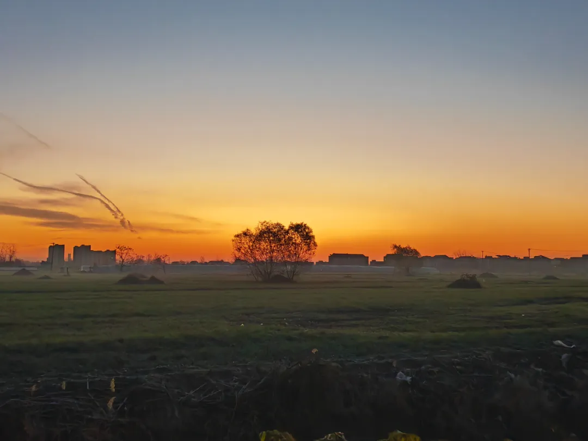
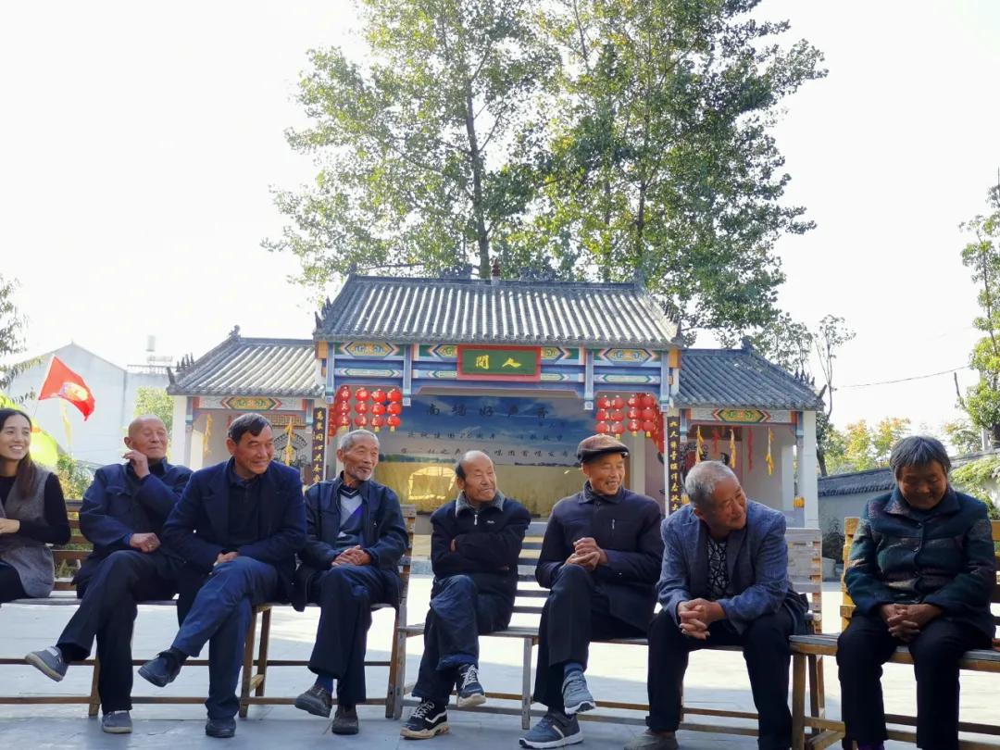
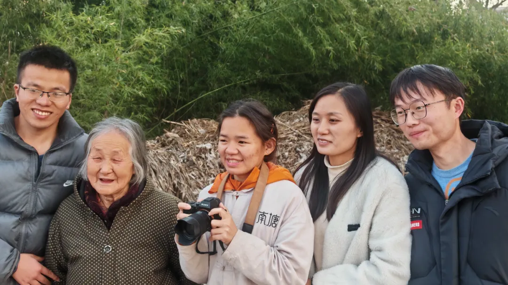
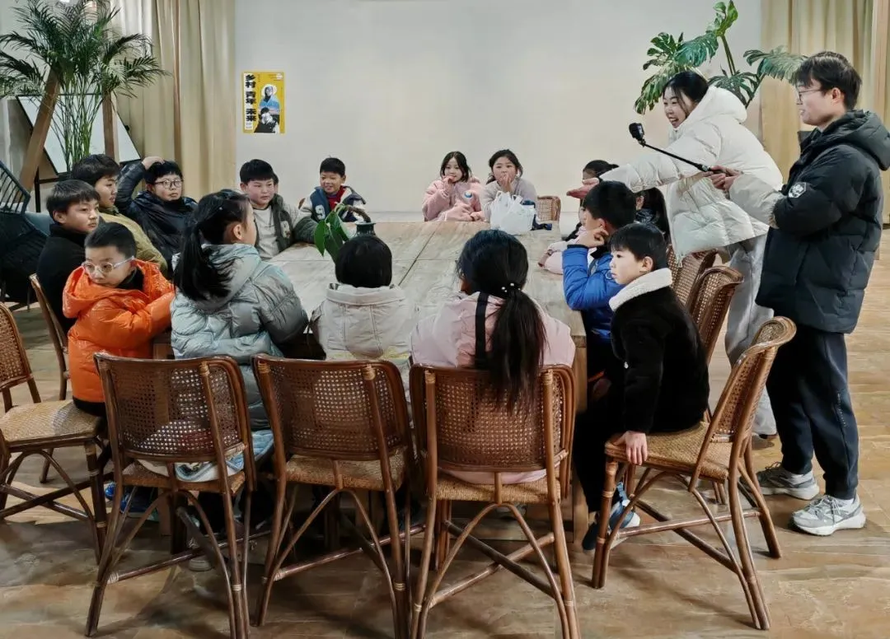
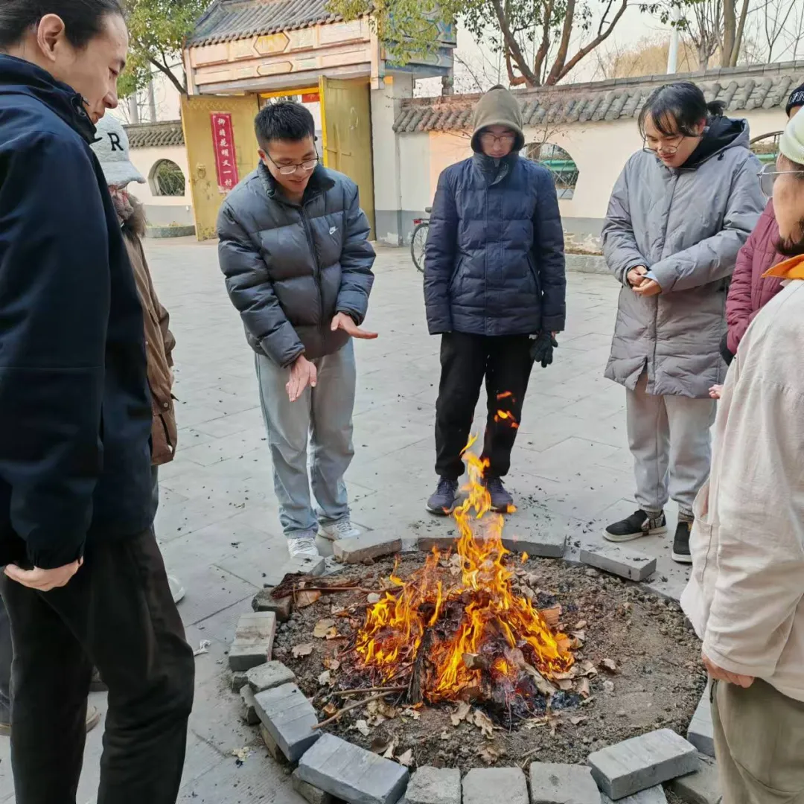
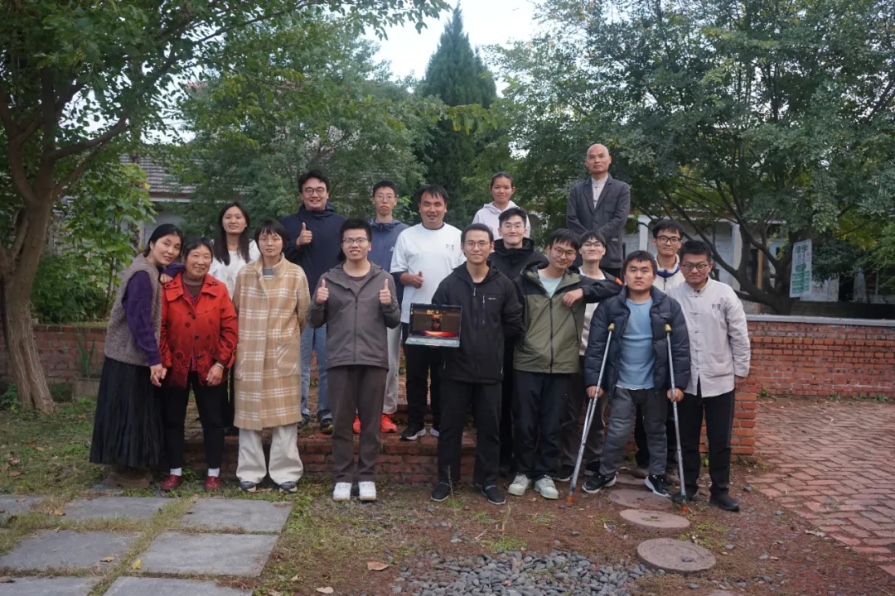
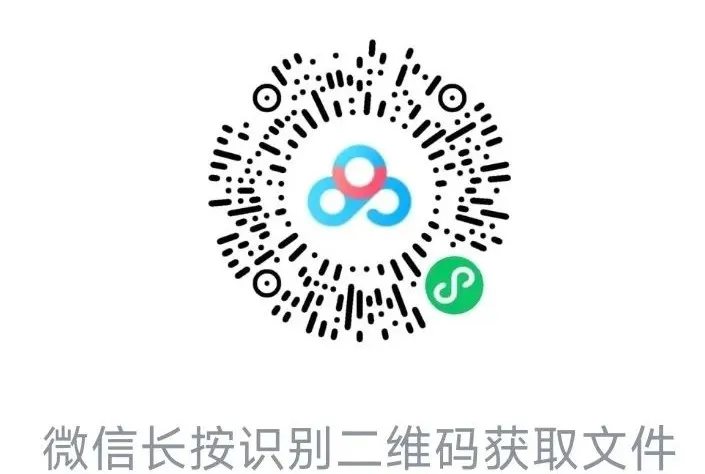

招募｜2025 南塘青年实习生计划
作者: 书乡南塘

南塘青年实习生计划由安徽阜阳南塘兴农合作社于2024年3月发起，计划旨在通过搭建青年互助交流平台，既支持青年人在参与乡村建设中成就自我，又通过青年力量推进合作社进行生态化转型，建设生态文明新乡村。

安徽省阜阳市颍州区三合镇三星村南塘兴农合作社地处中部黄淮海流域，以农业生产和外出打工为主的普通村庄，合作社从1998年起，完整地经历了当代乡建重要阶段，她的发展历程也是中国民间乡村建设的一个缩影。南塘合作社是“爱故乡”行动的阜阳工作站，是当代村歌创作的第一个实践村。父老乡亲建设家园的热情获得：《中国改革》《中国青年报》《中国新闻周刊》关注，图书《可操作的民主》详细记录了南塘早期在社区建设，社区治理方面的努力。南塘乡建26年，经历普法维权、社区营造、合作经济、生态农业、社区综合发展的历程，2022年遇到比较大困难，得到地方党委政府的帮助，在困境中转心转念转功课，探索乡村振兴的新方向。2024年3月合作社发起青年实习生计划以来，展现了蓬勃新生的发展活力。
1、培养8名具备乡建宏观思想理论认知，熟悉区块链/DAO组织/Web3等新工具的基本原理和应用技能，认同城乡互动的可持续生活方式，践行中国传统文化的自我内修，掌握乡村组织制度创新、生态产业发展、新生活构建的基本技能与经验，有自我觉察意识和团队协作能力的学员。2、推动南塘兴农合作社立足社区，应用新型网络工具，通过数字化技术与生态农业发展、零污染村庄建设、大地书房运营、社区文化建设等紧密结合，探索城乡连接的一二三产融合的新业态，形成合作社发展的新气象、新格局。
1、Web3在南塘的落地生根
南塘合作社自2023年10月开始接触Web3以来，已吸引SeeDAO、LXDAO等众多Web3伙伴实地走访交流，并于2023年8月正式成立了南塘DAO，利用区块链技术上线了南塘豆（工分）社区治理系统，南塘合作社已成为国内乡村建设与Web3结合的试验先锋。学员可以全面学习Web3的基础原理和工具，并参与南塘DAO的发展。2、生态农业与零污染村庄建设
南塘合作社从2018年起尝试生态种植小黄姜，并与黄山七约米酒合作加工“姜进酒”。2024年7月开启了酵素农耕和零污染村庄建设的探索，目前已制作果蔬环保酵素百余桶。学员可以全程参与生态农业的生产与加工等过程，深入社区推动零污染村庄的组织建设工作。3、大地书房的运营和社区文化建设
南塘合作社已于2024年10月建成100余人参与共建的大地书房，书房内已开展儿童周末自然体验活动、乡亲交流沟通会、“青年、乡村、未来”论坛等活动。学员可以在大地书房开展各种社区文化活动。
1、项目执行团队为扎根乡村二十余年的村庄发展推动者，拥有丰富的实践经验和开阔的社会视野，与参与学习的伙伴可以构建紧密的支持关系；2、每天伴随着太阳升起，伙伴们共同晨练、晨悟、打扫庭除，有节奏的开启一天的学习与工作；
3、学习过程虽有基本框架，但不是限制和约束，我们认为参与伙伴既是学习者，也是村庄发展的贡献者，因此，有足够的自主创造空间；4、学习过程扎根乡村，但不局限于乡村，我们会为参与伙伴创造与web3从业者、乡建师友、传统文化和素食践行者连接交流的机缘；5、除参与实习生计划的伙伴外，村庄内还有第一期实习生、短期志愿者/居住者及南塘DAO等10余位青年伙伴共同成长。
项目团队：
杨云标: 南塘合作社负责人，有26年乡村工作经验，教训。2008年众德杯中国合作经济年度人物。项目负责人，负责整个项目的具体执行，与实习生在日常的学习计划中共同创造，相互支持，共同成长。
张芳芳：南塘社区工作7年，项目助理，负责项目日常管理。
项目督导：对项目团队成员的成长和项目的发展进行指导和陪伴支持。邱建生：中国人民大学管理学博士，福建农林大学乡村建设中心副主任，硕士生导师，北京晏阳初平民教育发展中心总干事，国仁智库联盟理事长，爱故乡计划和善食行动发起人；长期致力于新时期乡村建设与平民教育的推动工作。
孙恒：乡村民谣音乐人，谷仓乐队主创、爱故乡村歌计划发起人，央视CCTV-17乡村振兴观察员。
baiyu：CKB生态负责人，SeeDAO 发起人，北大硕士7、结业后可根据实习生的需求与兴趣获得在南塘合作社的工作机会。8、实习生将优先参加：第二届道安礼乐生活节暨第九届中国文化研习营之青年互助营（点击）
南塘青年实习生计划于2025年1月1日正式启动，学习周期为2025年3月1日至8月31日，现面向全社会择优招募8名实习生：
2、认同可持续生活理念并愿意尝试新的生活方式，从吃穿住行等方面进行尝试探索；3、愿意参与农作，与农户和土地建立深入连接，在实践中向农户学习；4、愿意接受俭朴的生活环境，吃纯净素食，居住集体宿舍，接纳不同人的生活习惯，在集体生活中相互看见，共同成长；7、不沉迷于手机和网络游戏，有至少一项体育/兴趣爱好；①有意者请扫码下载申请表，细心填写，以“姓名+南塘实习生报名申请表”为文件名，提交至报名邮箱2311969546@qq.com；
②报名截止后项目组会安排一对一视频电话交流，入选者将成为预备学员，项目组将会安排半个月实地双选期（预计2月下旬开始）；③双选期结束后，项目组会根据学员的综合情况确定正式学员，开启为期6个月的学习计划。每位正式学员需交2000元学习押金，学习期满顺利结业的伙伴将退还押金。学习期间，因个人原因退出或被项目组劝退，不予退还押金。我们常年招募短期志愿者，有兴趣的伙伴可以联系芳芳、健乔相关播客：